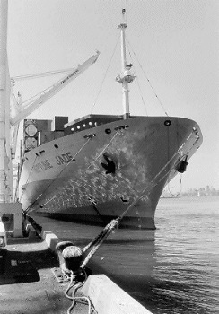

Submitted on Wed, 11/23/2005 - 6:07am
Members of the Bay Area The IWW participated in and played a significant role in the Neptune Jade soildarity actions in 1997. A detailed history of that struggle is documented here: http://www.iww.org/unions/iu510/jade/
By Steve Zeltser
ONCE AGAIN DOCKWORKERS FROM around the world met in Liverpool Sept. 23-24 — this time not to co-ordinate solidarity actions for the Liverpool dockers, but to recognize those unions that participated in the worldwide actions and learned the lessons of that struggle in preparation for future waterfront battles.
Liverpool Dockers
The Liverpool struggle began 10 years ago when young dockworkers spontaneously set up a picket line over substandard conditions and other union members of the Transport and General Workers Union honored their picket line, as they had always done.
All 500 dockers were sacked by the employer, Mersey Docks and Harbour Company.
Starting the weekend’s main event, Liverpool dock steward Jimmy Nolan opened by reminding participants that the gathering was not a celebration because the dockworkers did not win their struggle. Rather it was a commemoration of a struggle that reignited militancy and underscored the necessity of international workers’ solidarity in today’s global economy.
In the heat of the Liverpool battle, maritime unions around the world awakened to their call from Europe to Japan, from the United States and Canada to Australia and New Zealand.
In the end the Liverpool dockers lost because they couldn’t mobilize mass picketing on the Mersey docks to stop scabbing. That key element of solidarity was betrayed by the lack of support of their own union, the Transport and General Workers Union, the Trade Union Congress and British Prime Minister Tony Blair’s so-called New Labour Party.
Bob Crow, General Secretary of the Rail, Maritime and Transport Workers Union (RMT) (whose union has recently been purged from the New Labour Party for its militancy and its opposition to the war in Iraq) fired up the crowd when he cited the illegal strike action by Gate Gourmet workers – mainly South Asian women – earlier that month. Their action sparked an unofficial strike by baggage handlers that grounded all flights of British Airways at Heathrow Airport.
He condemned the banning of solidarity actions by Thatcher’s anti-union legislation and left intact by Blair’s New Labour Party. To rousing applause Crow asked, “What’s a ‘secondary’ action? Surely that’s what the trade union movement is based on.”
One of the first speakers was ILWU International President Jim Spinosa, who headed a delegation of 15 members and officers. He reminded the audience that the Liverpool dockers’ struggle had inspired longshore workers to network and to organize solidarity actions: first, the Neptune Jade in Oakland in support of the Liverpool dockers, then the Columbus Canada in Los Angeles in support of the Australian wharfies, then actions in defense of the Charleston longshoremen and most recently the bloody police assault on dockworker union president Jorge Silva Baron in Iquique, Chile.
Spinosa noted what dockworkers have been learning in this era of international capitalism.
“We have to understand how the employers have been able to mobilize and get an upper hand in globalization,” he said. “They project out 10, 15, 20 years. We working people are now doing the same thing, hooking up with organizations and networking around the world in solidarity. We are closing the world tighter and tighter so we can put together actions much quicker than we did for the Liverpool situation.”
Receiving a warm applause for his open and honest appraisal, Frank Leys, Secretary of the ITF Dockers Section, acknowledged that mistakes were made by his five million-strong organization during the Liverpool dispute.
The Transport and General Workers Union never supported the strike, making it unofficial and thereby illegal. Since the TGWU was an ITF affiliate, the ITF didn’t support the dockers either.
“Staying silent has never brought the workers forward,” Leys said. “Mistakes of the past will be remembered in order to avoid repeating them.”
He exhorted all dockworkers to unify now in order to fight and defeat the European Unions’ Port Directive on “selfhandling” that would allow ships’ crews to do longshore work in port. If implemented in Europe, this union-busting move will be repeated in all the world’s ports.
Ken Riley, president of the ILA Charleston longshore Local 1422, recounted how their contract struggle with Nordana Lines in 2000 and the subsequent Charleston 5 defense campaign was ultimately successful because of ILWU’s international dockworker links, especially the Coordinadora of Spain, that were brought into play. These bonds were forged at international conferences in support of the Liverpool dockers.
In the tradition of Harry Bridges’ good Aussie friend Tas Bull, Paddy Crumlin, National Secretary of the Maritime Union of Australia (MUA) spoke poignantly about the practical reality of the state of trade unions and of class struggle globally. He praised the Liverpool dockworkers for their courageous struggle and criticized Bill Morris, then-General Secretary of the Transport and General Workers Union, for not supporting the strike.
“The ITF should have played a stronger role, no matter how difficult, in making sure it was a win not a loss,” Crumlin said, agreeing with the ITF’s Leys.
He said now the movement has “the experience to go forward” and “we’ve learned the lesson from the Liverpool struggle: unions must organize properly, supporting rank-and-file workers on the job, and organize globally.”
As an example, Crumlin cited the ILWU’s solidarity action during the MUA strike. The Columbus Canada had been loaded by scabs in Australia and because of the labor-community picket in the port of Los Angeles, the ship was forced to return to Australia to be loaded by union wharfies before it would be discharged on the U.S. West Coast.
He pointed out that dockworkers’ unions are being targeted by maritime employers and the governments because of their progressive stands, including dock protests against wars like in Vietnam and Iraq.
“They are systematically taking us on because we are a threat to what they are doing to our societies and our global market, and I’m proud of that,“ Crumlin said. “We’ve identified the enemy and most of us here have looked the devil in the eye and we find if we are prepared to stick together and work together, the devil always blinks.”
Solidarity Has No Borders: the Journey of the Neptune Jade
Available from the producer:
Labor Video Project
P.O. Box 720027
San Francisco, CA 94172
$20 plus $5 shipping. Please specify DVD or VHS.
Voice: 415-282-1908 • Fax: 415-695-1369 • Email: lvpsf@labornet.org
Neptune Jade action: How international labor solidarity works
Neptune Jade
The activities commemorating 10th anniversary of the start of the Liverpool dockers’ struggle began with the showing of the video Solidarity Has No Borders: The Journey of the Neptune Jade.
“There were many actions in support of the Liverpool dockers during the course of our two-and-a-half-year struggle, but one stands out — the Neptune Jade,” Liverpool dock steward Terry Teague said when introducing the video.
The Neptune Jade action will leave a high watermark on the pilings of labor history because of its boldness, level of co-ordination and timing.
“The action came at just the right time because after two years in dispute the men’s spirits were low and this picked ’em right back up,” Mickey Tighe, Liverpool dock steward, noted. It enabled the stewards to keep the dockworkers together.
Like a ripple in the water, it reawakened workers’ awareness of the importance of international solidarity and became the model for other solidarity actions that followed, like the 1998 boycott of the Columbus Canada in Los Angeles in support of the Australian wharfies and the action by the Spanish dockers against the Nordana shipping line in support of the Charleston Five longshore workers.
Since previous arbitration hearings restricted the employer group, the Pacific Maritime Association (PMA), from retrieving its losses due to industrial actions from the ILWU, the PMA moved to sue the individuals who were on the picket line for the financial hit its member companies claimed they took because of the picket.
The PMA subpoenaed documents with information about individuals who were from the ILWU International, The Dispatcher, and Locals 10 and 34. Eventually PMA hauled then-International President Brian McWilliams and Dispatcher editor Steve Stallone into court, seeking to have them found in contempt of court and thrown in jail if they continued to refuse to turn snitch.
The ILWU won that case based on a ruling that found that The Dispatcher as a newspaper had a First Amendment right to gather information without the interference or intrusion of the government.
In pre-trial motions the charges against two of the three named defendants – Local 10 activist Jack Heyman and the Golden Gate chapter of the Labor Party – were thrown out and the court restricted PMA to suing only those it allegedly had evidence committed illegal acts on the picket line.
But the court allowed PMA to continue to pursue picket captain and IBU member Robert Irminger and try to force him to name others on the line.
After Bay Area longshore locals shut down the Port of Oakland July 22, rallied in front of the PMA’s Oakland office and marched 1,000 strong to the courthouse demanding the charges be dropped — and the Coast Committee threatening coastwise action if PMA carried out the prosecution of Irminger — the employers gave in.
Following the video showing, Steve Zeltzer of the Labor Video Project chaired the event with Irminger and Heyman speaking, followed by discussion.
Irminger chronicled how the Neptune Jade sailed into the port of Oakland Sept. 28, 1997 from Thamesport, England. The port was operated by Mersey Docks and Harbor Company – which had sacked the 500 Liverpool dockers. It was the second anniversary of the strike. Labor and community activists set up a picket line in solidarity with the Liverpool dockers. At this 10th anniversary commemoration in Liverpool, steward Terry Teague presented Irminger with a plaque for his dedication to the struggle.
For three-and-a-half days longshore workers refused to cross the picket line, despite a court injunction ordering them to do so. Finally, the Neptune Jade, desperate to unload its cargo in a U. S. West Coast port but finding no safe haven, departed for Vancouver, Canada, another ILWU port.
Labor activists across the border also set up a picket, forcing the Neptune Jade to sail for Japan. There Japanese dockworkers – well aware of the hot cargo on board – didn’t touch the ship in two ports. Finally the ship sailed to Taiwan where the cargo was discharged and the Neptune Jade, now internationally notorious, was renamed.
Such power of coordinated action by workers in three different countries sent shivers down the spine of maritime companies around the globe. The website of the Neptune Jade Defense Committee was swamped by visits from global corporations fearful of the specter of labor solidarity.
At the Longshore Caucus held after the ILWU Convention in Portland in 2000, attorney Rob Remar (who was instrumental in helping to pilot the Neptune Jade campaign through legal channels) explained that we live in a country with repressive anti-labor legislation like the Taft-Hartley Act which makes solidarity actions, or as employers say, “secondary boycotts,” difficult for unions to organize. “The significance of the Neptune Jade action lay in the fact that the ILWU was able to implement its policy of support for their Liverpool brothers while defending itself against legal attacks,&#rdquo; he said.
At the Liverpool gathering, Irminger pointed out how the Neptune Jade action influenced later events. “It was the Neptune Jade action which strengthened the links between Bay Area organized labor and community groups, preceding and laying the basis for a global justice movement here,” he said.
In 1999, he pointed out, ILWU and other trade unionists marched with young protesters demonstrating against the World Trade Organization in Seattle. And again, in 2001, global justice activists successfully picketed an Italian ship in the Port of Oakland to protest the killing of a young anti-capitalist globalization protester in Genoa.
Jack Heyman, who had been sent to Liverpool by then-ILWU President Brian McWilliams early in their struggle in 1996, drew a direct connection from Liverpool to the Neptune Jade to the ILWU’s contentious 2002 contract negotiations and the anti-Iraq War protests. When the Pacific Maritime Association and the Bush administration threatened the ILWU during the 2002 contract negotiations, he said, these activists and dockworkers internationally were readily mobilized to support the ILWU — from marches and rallies in San Francisco to parrying with right-wing politicians in the Australian press.
Heyman said when anti-war activists demonstrated in the Port of Oakland at the start of the Iraq War, longshore workers refused to cross their picket lines as they had done six years earlier in the Neptune Jade picket line. One difference, he noted, was that Oakland mayor Jerry Brown himself participated in the Neptune Jade picket, but he now supports the blood police repression of the anti-war demonstration.
The veil of 9/11 “national security,” had been used by the government to cover the peaceful protesters as “terrorists.” Scores were shot with so-called less-than-lethal weapons including nine longshore workers. Business Agent Heyman was arrested for trying to protect his members against the police assault. Although the port was not shut down, the case against the police, ILWU Local 10 v City of Oakland, is scheduled for court in January 2006.
 Baristas Demand Guaranteed Work Hours
Baristas Demand Guaranteed Work Hours LabourStart TV has been a huge success.
LabourStart TV has been a huge success. We have had the ability for more than a decade now to put videos on the net. But unions, as usual, have lagged behind. Nevertheless, there have been examples of unions producing quality online video on a regular basis.
We have had the ability for more than a decade now to put videos on the net. But unions, as usual, have lagged behind. Nevertheless, there have been examples of unions producing quality online video on a regular basis.